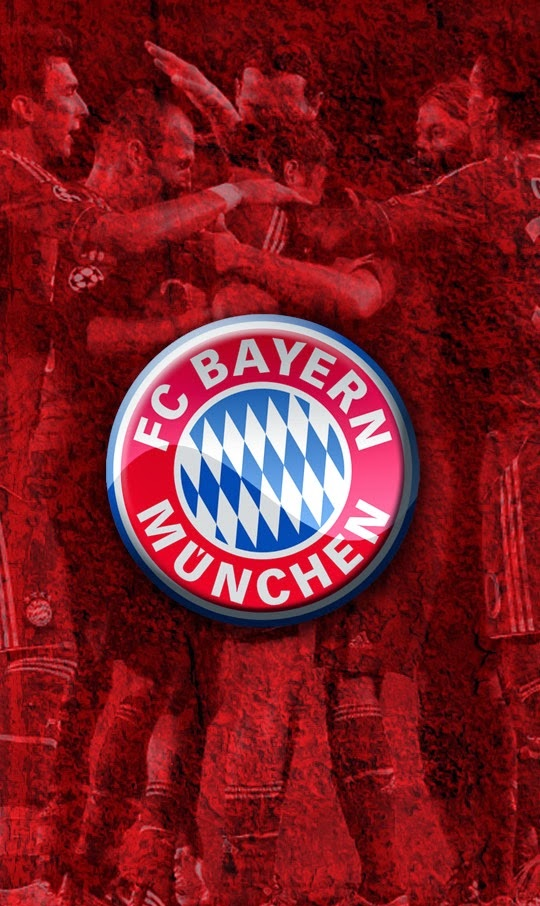

-
 Suivre ce blog Administration Connexion + Créer mon blogAccueil Eurosport L'Equipe RMC Sport beIN SPORTS Groupe Canal + Contact
Retrouvez les prochains rendez-vous FOOT à la TV !
30 Mars 2021MARDI 30 MARS 18h00 L'Equipe.fr Qualifications Coupe du Monde 2022 (Groupe A) Azerbaïdjan / Serbie Direct 18h00 L'Equipe.fr Qualifications Coupe du Monde 2022 (Groupe H) Chypre / Slovénie Direct 20h00 FFF TV Championnat National (21ème Journée) Villefranche...
Lire la suite Tag(s) : #Agenda , #RMCSport , #CanalPlusSport , #beINSPORTS , #canalplus , #lachainelequipe , #lequipeFOOT , #D1Arkema , #NationalFFFRetrouvez les prochains rendez-vous Sports Américains à la TV !
30 Mars 2021MARDI 30 MARS 00h45 beIN 1 NBA - Magazine NBA Extra (Émission du 29/03) Rediff 01h30 beIN 1 NBA (Saison Régulière) New Orleans Pelicans @ Boston Celtics Direct 01h40 beIN Max 4 NBA (Saison Régulière) Miami Heat @ New York Knicks (VO) Direct 09h15 beIN...
Lire la suite Tag(s) : #Agenda , #beINSPORTS , #CanalPlusSport , #canalnhl , #NBAextra , #MLBExtra , #NFLextra , #lequipeNFL , #NFL , #NBARetrouvez les prochains rendez-vous SPORT à la TV !
30 Mars 2021MARDI 30 MARS 13h45 RMC Découverte Hippisme Direct Quinté Direct 17h00 Eurosport 1 Tennis Tournoi ATP Master 1000 Miami Open presented by Itau - 1/8èmes de Finale Direct 17h00 Site Eurosport.fr Hand European League (1/8ème Retour) K adetten Schaffhausen...
Lire la suite Tag(s) : #Agenda , #beINSPORTS , #CanalPlusSport , #RMCSport , #lachainelequipe , #Eurosport , #canalplus , #SEFbasket , #SEFVolley , #SEFHockeyBelgique / Biélorussie : Sur quelle chaîne suivre en clair la rencontre mardi ?
30 Mars 2021La Belgique accueillera la Biélorussie ce mardi 30 mars pour le compte de la 3ème journée des Éliminatoires pour la Coupe du Monde 2022. La rencontre commencera à 20h45 et sera diffusée en direct sur la chaine L'Equipe. La Belgique avait très bien entamé...
Lire la suite Tag(s) : #Foot , #lachainelequipe , #lequipeFOOT , #WorldCup , #CM2022 , #Qatar2022 , #WCQ , #Qualifiers , #COMEONBELGIUMLuxembourg / Portugal : Sur quelle chaîne suivre en clair la rencontre mardi ?
30 Mars 2021Le coup d'envoi de ce match de qualification à la Coupe du Monde 2022, qui se déroulera à Josy-Barthel (Luxembourg) sera donné le mardi 30 mars 2021 à 20h45. Cette rencontre sera à suivre en direct et en clair sur TFX avec les commentaires de Bixente...
Lire la suite Tag(s) : #Foot , #TFX , #TF1 , #CM2022 , #WorldCup , #Qatar2022 , #WCQ , #Qualifiers , #TeamPortugal , #VamosComTudoTurquie / Lettonie : Comment suivre la rencontre mardi ?
30 Mars 2021Le coup d'envoi de Turquie / Lettonie, match de qualification à la Coupe du Monde 2022, qui se déroulera à l'Atatürk Olimpiyat Stadyumu (Istanbul), sera donné le mardi 30 mars 2021 à 20h45. Une rencontre à suivre en direct sur l'Equipe.fr en cliquant...
Lire la suite Tag(s) : #Foot , #lachainelequipe , #lequipeFOOT , #CM2022 , #WorldCup , #Qatar2022 , #WCQ , #Qualifiers , #Turkiye , #BizimÇocuklarMaroc / Burundi : Sur quelle chaîne suivre la rencontre mardi ?
30 Mars 2021Dans le cadre de la sixième et dernière journée des éliminatoires de la CAN 2021, le Maroc accueille ce mardi le Burundi. Cette rencontre sera à suivre en direct à 21h00 sur beiN SPORTS 1 ! Dans ce groupe E, plus de suspense pour le Maroc qui est déjà...
Lire la suite Tag(s) : #Foot , #beINSPORTS , #TotalAFCONQ2021 , #AFCONQ2021 , #CAF2021 , #DimaMaghrib , #AtlasLions , #Burundi , #SoutenonsnosHirondellesSur quelle chaîne suivre le Tournoi WTA 1000 de Miami mardi ?
30 Mars 2021Du 24 mars au 04 avril, la planète tennis se réunit outre-Atlantique pour l’un des événements les plus prestigieux du calendrier ATP : Si l’ATP Masters 1000 de Miami est à suivre en direct et en exclusivité sur l’ensemble des plateformes d’Eurosport (voir...
Lire la suite Tag(s) : #Tennis , #beINSPORTS , #WTA , #MiamiOpenATP Masters 1000 de Miami : Sur quelle chaîne suivre le tournoi mardi ?
30 Mars 2021Du 24 mars au 04 avril, la planète tennis se réunit outre-Atlantique pour l’un des événements les plus prestigieux du calendrier ATP : l’ATP Masters 1000 de Miami, à suivre en direct et en exclusivité sur l’ensemble des plateformes d’Eurosport ! Pour...
Lire la suite Tag(s) : #Tennis , #Eurosport , #Eurosport_FR , #ATP , #ATPTour , #MiamiOpenNîmes / Medvedi Chekhov : Comment suivre la rencontre en direct mardi ?
30 Mars 2021En 1/8èmes de Finale Retour de l'European League de handball, l'US Nîmes Gard accueille ce mardi le club de Medvedi Chekhov. Cette rencontre sera à suivre en direct à 20h45 sur l'application d'Eurosport et Eurosport.fr (Prise d'antenne à 20h35) ! La semaine...
Lire la suite Tag(s) : #Hand , #Handball , #Eurosport , #GreenTeam , #USAM , #ehfelKadetten Schaffhausen / Montpellier : Comment suivre la rencontre en direct mardi ?
30 Mars 2021En 1/8ème de Finale Retour de l'European League de handball, Montpellier Handball se déplace ce mardi chez le club suisse de Kadetten Schaffhausen. Cette rencontre sera à suivre en direct à 17h00 sur l'application d'Eurosport et Eurosport.fr (Prise d'antenne...
Lire la suite Tag(s) : #Hand , #Handball , #Eurosport , #ehfel , #MHB , #kadettenDijon / Gravelines-Dunkerque : Comment suivre la rencontre ce mardi ?
30 Mars 2021Un seule rencontre au programme ce mardi avec le déplacement de Gravelines-Dunkerque, dixième de Pro A, avec un bilan de 7 victoires pour 7 défaites, sur le parquet de la JDA Dijon, deuxième de Jeep Elite et qui reste sur deux défaites de suite en championnat....
Lire la suite Tag(s) : #LNBenCLAIR , #JeepElite , #Sportenclair , #PROB , #Basket , #LNB , #LNBTV , #GetRedy , #TeamJL , #TousBCMA Travers la Flandre : Sur quelles chaînes suivre la course mercredi ?
30 Mars 2021Annulée la saison dernière en raison de la pandémie, la classique flandrienne qui avait vu Mathieu Van Der Poel s'imposer en 2019 revient avec un nouveau parcours. La Course sera à suivre en direct sur les antennes d'Eurosport et en clair sur la chaîne...
Lire la suite Tag(s) : #Cyclisme , #Eurosport , #lachainelequipe , #twittcyclos , #LesRP , #DDV21 , #DDVAngleterre / Pologne : Comment suivre la rencontre mercredi ?
30 Mars 2021Le coup d'envoi d'Angleterre / Pologne, match de qualification à la Coupe du Monde 2022, qui se déroulera à Wembley (Londres) sera donné le mercredi 31 mars 2021 à 20h45. Cette rencontre à suivre en direct sur l'Equipe.fr en cliquant : ICI ! L'Angleterre...
Lire la suite Tag(s) : #Foot , #lachainelequipe , #lequipeFOOT , #WorldCup , #CM2022 , #Qatar2022 , #Qualifiers , #WCQ , #ThreeLions , #PolandLituanie / Italie : Comment suivre la rencontre mercredi ?
30 Mars 2021Le coup d'envoi de Lituanie / Italie, match de qualification à la Coupe du Monde 2022, qui se déroulera au LFF Stadionas (Vilnius) sera donné le mercredi 31 mars 2021 à 20h45. Cette rencontre à suivre en direct sur l'Equipe.fr en cliquant : ICI ! Après...
Lire la suite Tag(s) : #Foot , #lachainelequipe , #lequipeFOOT , #CM2022 , #WorldCup , #WCQ , #Qualifiers , #VivoAzzurro , #Qatar2022 , #Azzurri , #NazionaleEspagne / Kosovo : Comment suivre la rencontre mercredi ?
30 Mars 2021Le coup d'envoi d'Espagne / Kosovo, match de qualification à la Coupe du Monde 2022, qui se déroulera à l'Estadio de la Cartuja (Séville) sera donné le mercredi 31 mars 2021 à 20h45. Cette rencontre à suivre en direct sur l'Equipe.fr en cliquant : ICI...
Lire la suite Tag(s) : #Foot , #lachainelequipe , #lequipeFOOT , #CM2022 , #WorldCup , #Qatar2022 , #WCQ , #SomosEspaña , #Qualifiers , #SomosFederaciónBosnie-Herzégovine / France en direct mercredi sur M6
30 Mars 2021Après l’Ukraine et le Kazakhstan, l’équipe de France affronte la Bosnie-Herzégovine à Sarajevo pour les éliminatoires de la Coupe du Monde 2022. Grâce à deux buts inscrits en première période, l’Équipe de France a remporté diamnche son deuxième match...
Lire la suite Tag(s) : #Foot , #M6 , #FFF , #FiersdetreBleus , #CM2022 , #WorldCupNantes / Kielce : Comment suivre la rencontre mercredi ?
30 Mars 2021PLACE AUX PHASES FINALES DES COUPES D’EUROPE DE HANDBALL SUR EUROSPORT ! Les Coupes d’Europe de handball entament leurs phases finales sur Eurosport, diffuseur officiel de la Ligue des Champions, la Ligue Européenne et la Coupe Européenne, masculines...
Lire la suite Tag(s) : #Hand , #Handball , #Eurosport , #ehfcl , #PeupleViolet , #HBCNKIELCE , #gramyRAZEM , #ShowtimeForChampions , #WeHfamilyFrance Espoirs / Islande : Sur quelle chaîne suivre en clair la rencontre mercredi ?
29 Mars 2021France Télévisions plus que jamais partenaire des équipes de France et aux côtés de la jeunesse dans toute sa diversité, vous propose de vivre sur France 4 du 24 au 31 mars, l'aventure des Bleuets au championnat d'Europe Espoirs de football. La qualification...
Lire la suite Tag(s) : #Foot , #France4 , #FranceTVSport , #FiersdetreBleus , #FFF , #U21EURO , #AllezlesBleus , #FRAISL , #EquipeDeFranceTop Gear débarque ce mercredi sur Twitch avec un tournoi Grand Tourismo
29 Mars 2021À la veille du premier épisode de la saison 7 de TOP GEAR FRANCE diffusée à partir du 1er avril sur RMC DÉCOUVERTE (voir : ICI ), la célèbre émission de voiture débarque sur la plateforme de stream Twitch le 31 mars ! Cette année, le trio légendaire Philippe...
Lire la suite Tag(s) : #TopGearFrance , #Twitch , #RMCDécouverte , #GranTurismoSportTop Gear : Nouvelle saison inédite ce jeudi sur RMC Découverte
29 Mars 2021NOUVELLE SAISON, NOUVELLES VOITURES, NOUVELLE PISTE … ET NOUVELLES HISTOIRES ! RENDEZ-VOUS CE JEUDI A 21H05 SUR RMC DECOUVERTE ! Des récits qui s’écriront désormais à 4 ! Le trio légendaire Philippe Lellouche, Bruce Jouanny et Le Tone accueillent au sein...
Lire la suite Tag(s) : #RMCDécouverte , #TopGearFranceLes 1/8e de Finale de Champions Cup et Challenge Cup sur bein SPORTS
29 Mars 2021Vivez la reprise des Coupes d'Europe de Rugby sur beIN SPORTS, avec l'intégralité des huitièmes de finale de la Champions Cup et les huitièmes de finale des clubs français en Challenge Cup, dès le vendredi 02 avril. Après un arrêt prématuré des matchs...
Lire la suite Tag(s) : #Rugby , #beINSPORTS , #HeinekenChampionsCup , #ChampionsCup , #ChallengeCupRugby , #ChallengeCupLa MLB revient ce jeudi pour une nouvelle saison sur les antennes de beIN SPORTS
29 Mars 2021Après une dernière saison écourtée, vivez sur beIN SPORTS, la saison régulière 2021 de MLB de retour dans son format habituel de 162 matchs du 1er avril au 30 octobre avant des play-offs qui pourront s'étendre jusqu'au 3 novembre. Alors qu'aucune équipe...
Lire la suite Tag(s) : #MLB , #beINSPORTS , #MLBextra , #BaseBallFormule 1 et Moto GP : Le Guide pour suivre la saison 2021 sur les antennes de Canal Plus
29 Mars 2021Consultants, Magazines, Horaires, Dispositifs TV, etc ... Découvrez comment suivre la saison 2021/2022 en Formule 1 et Moto GP sur les antennes de Canal Plus ! L’ÉDITO DE GÉRALD BRICE-VIRET, DIRECTEUR GÉNÉRAL DES ANTENNES ET DES PROGRAMMESDU GROUPE C+...
Lire la suite Tag(s) : #CanalPlusSport , #canalplus , #LaF1SurCanal , #F1 , #MotoGP , #RDVAu1erVirage , #F1isBack 1 2 3 4 5 6 7 8 9 10 20 30 40 50 60 70 80 90 100 200 300 400 500 600 > > >A LA UNE !
Suivez-moi
sur Twitter via RSSCatégories
#Foot 4096 #INFOS TV 2314 #Basket & NBA 1613 #Rugby 1409 #Hand 840 #Agenda 772 #beINSPORTS 677 #canalplus 663 #CanalPlusSport 529 #lachainelequipe 513 #RMCSport 496 #Hockey & NHL 442 #Eurosport 424 #Tennis 411 #Volley 357 #FranceTVSport 348 #Cyclisme 347 #Foot US 257 #Droits TV 242 #Formule 1 203 #Moto 177 #Boxe 159 #Athlétisme 151 #Ligue1Conforama 128articles récents
Retrouvez les prochains rendez-vous...
Retrouvez les prochains rendez-vous...
Retrouvez les prochains rendez-vous...
Belgique / Biélorussie : Sur quelle...
Luxembourg / Portugal : Sur quelle...
Turquie / Lettonie : Comment suivre...
METEO
Meteo France Voir le profil de Franck LOISEL sur le portail Overblog Top articles Contact Signaler un abus C.G.U. Cookies et données personnelles